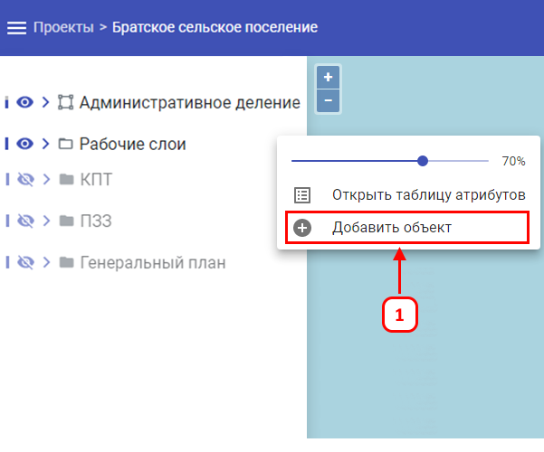
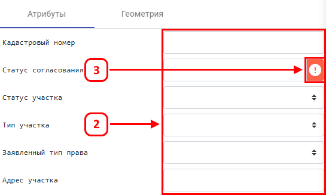
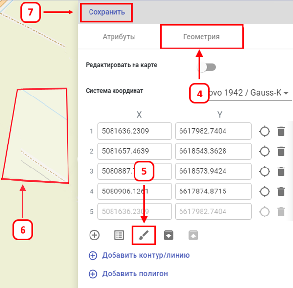

Для создания (добавления) объекта на карте, требуется:
-
В левой боковой панели выбрать требуемый слой с правами редактирования и кликнуть ЛКМ на значок управления слоем
 , далее выбрать «Добавить объект». Откроется панель, где необходимо ввести
данные об объекте.
, далее выбрать «Добавить объект». Откроется панель, где необходимо ввести
данные об объекте.
-
Требуется максимально заполнить все имеющиеся данные об объекте.
-
Обязательно заполнить поля, обязательные к заполнению – они обозначены соответствующим значком
.
-
Перейти на второй этап ввода данных, нажав на кнопку «Геометрия».
-
Кликнуть на значок «Нарисовать на карте».
-
Поставить не менее 4-х точек на карте.
-
Сохранить изменения, для этого нажать кнопку «Сохранить».


